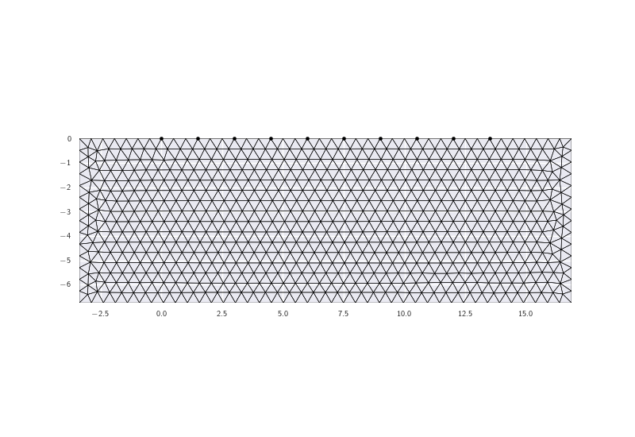
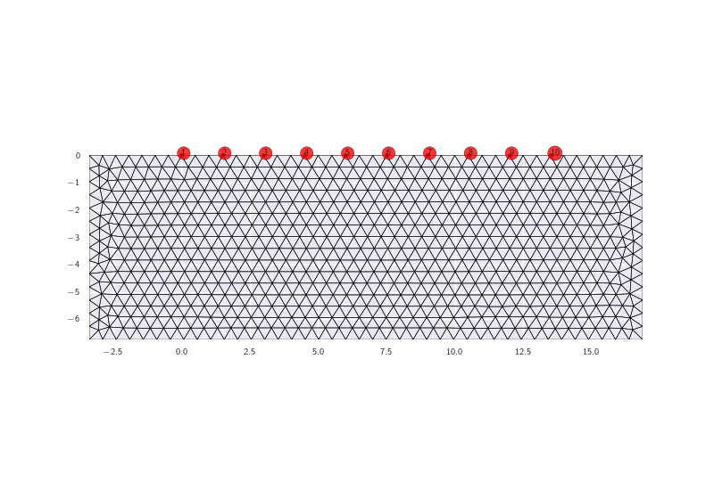
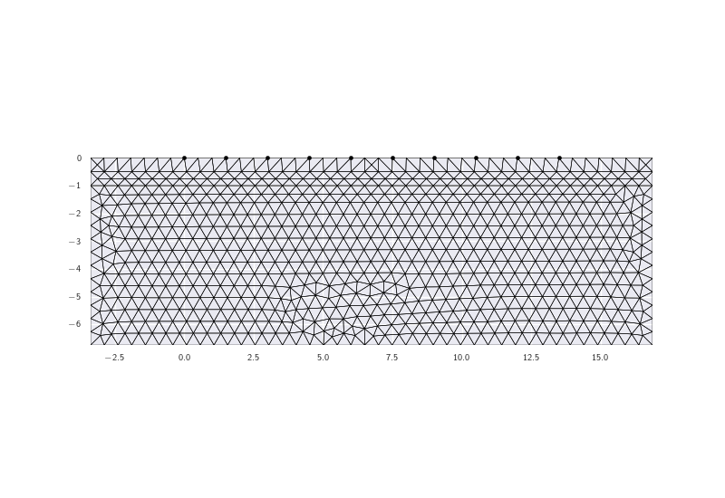

Note
Click here to download the full example code
Creating and handling grids
Grids for CRTomo can be created in multiple ways. We now support two ways:
using the crtomo.crt_grid.create_surface_grid function
using the command line command cr_trig_create
This example only shows the usage of the former method.
The top level crtomo import suffices for most tasks
import crtomo
Create simple surface grids with this wrapper
grid = crtomo.crt_grid.create_surface_grid(nr_electrodes=10, spacing=1.5)
grid.plot_grid()
# number the electrodes (useful for numerical studies)
grid.plot_grid(plot_electrode_numbers=True)
# save this grid to disc
grid.save_elem_file('elem.dat')
grid.save_elec_file('elec.dat')


Out:
This grid was sorted using CutMcK. The nodes were resorted!
Triangular grid found
Grid can be read from disk:
grid1 = crtomo.crt_grid('elem.dat', 'elec.dat')
print(grid1)
grid1.plot_grid()

Out:
This grid was sorted using CutMcK. The nodes were resorted!
Triangular grid found
CRMod/CTRomo grid instance
number of elements: 1332
number of nodes: 722
number of electrodes: 10
grid dimsensions:
X: -3.375 16.875
Z: -6.75 0.0
Create a grid with layering
grid = crtomo.crt_grid.create_surface_grid(
nr_electrodes=10,
spacing=1.5,
lines=[0.5, 1],
)
print(grid)
grid.plot_grid()

Out:
[[-3.375 -1. 12. ]
[-3.375 -0.5 12. ]]
[[16.875 -0.5 12. ]
[16.875 -1. 12. ]]
This grid was sorted using CutMcK. The nodes were resorted!
Triangular grid found
CRMod/CTRomo grid instance
number of elements: 1428
number of nodes: 770
number of electrodes: 10
grid dimsensions:
X: -3.375 16.875
Z: -6.75 0.0